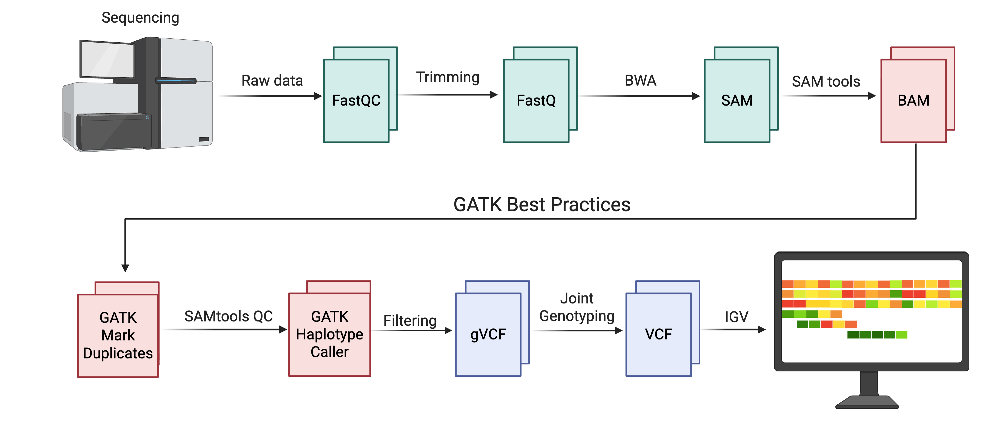
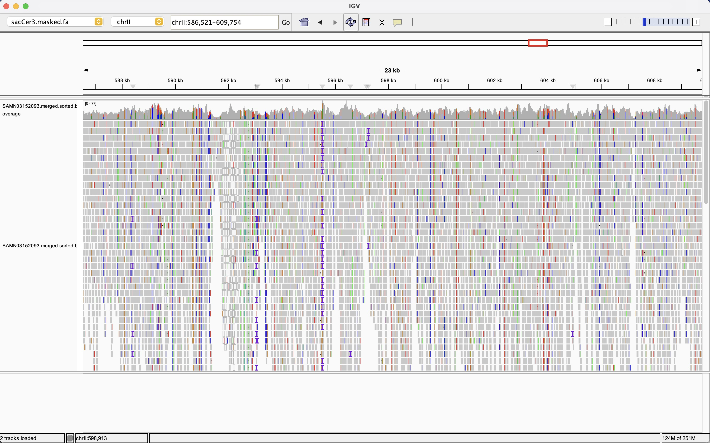
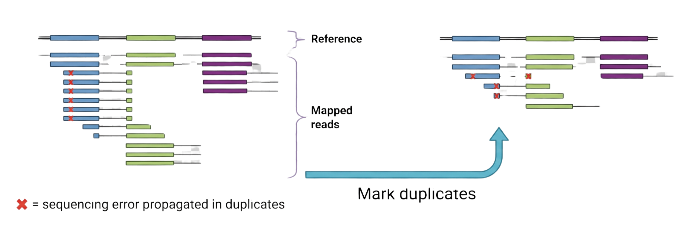
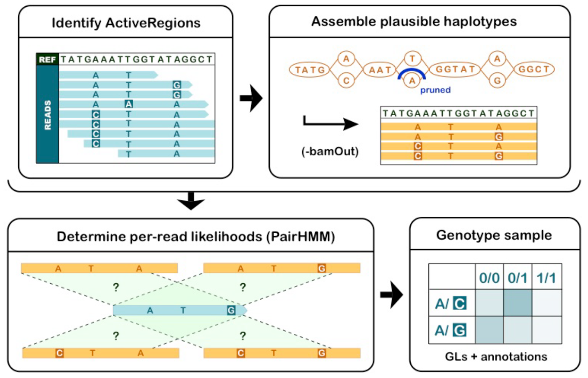
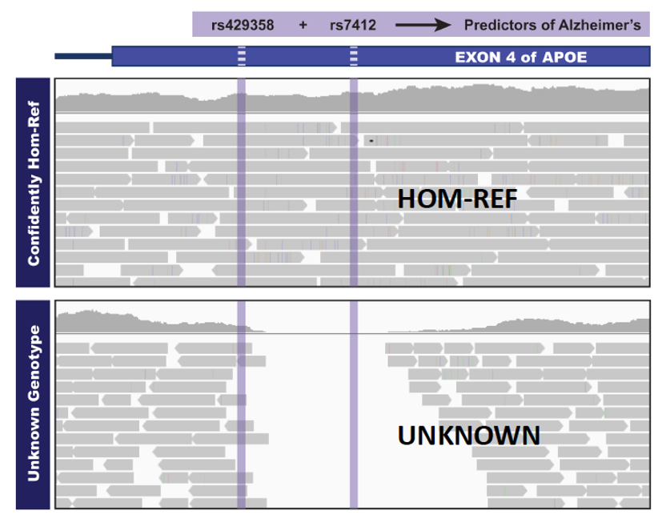
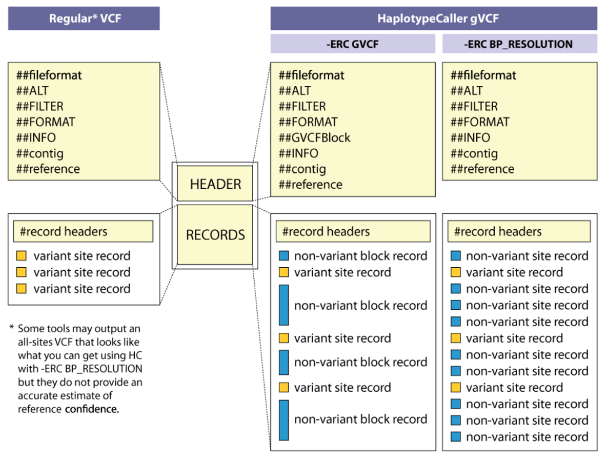
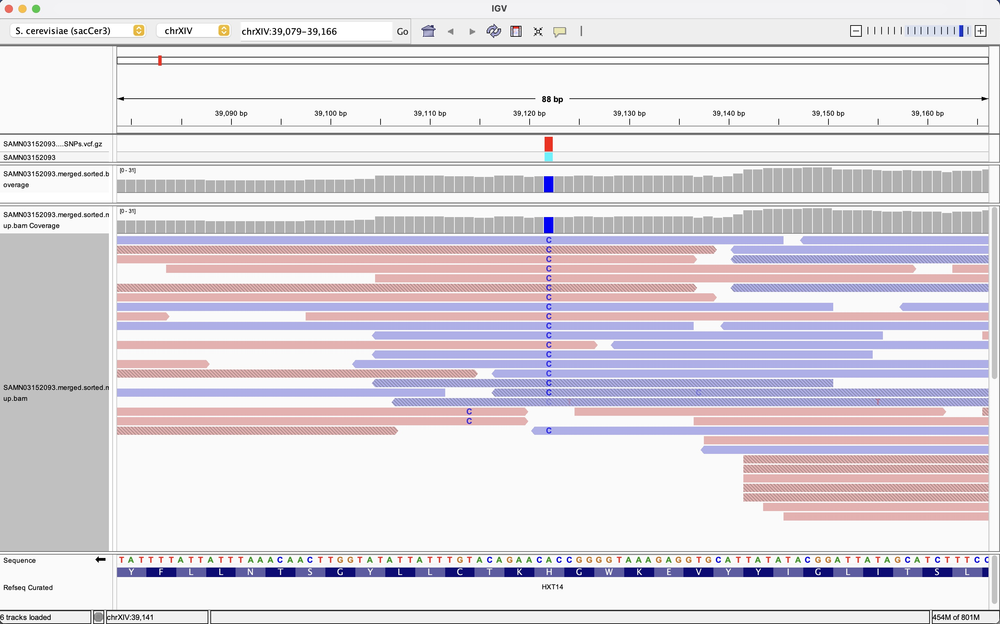

10 Variant Calling and Filtering with GATK
10.1 From Aligned Reads to Biological Variants
The journey from raw sequencing reads to biological insights requires multiple processing steps, each building on the previous work. In Chapter 6, you learned how short-read aligners like BWA use sophisticated indexing strategies to map billions of reads to reference genomes, producing BAM files that represent the best estimate of where each sequenced fragment originated in the genome. These aligned reads, however, are not the final product of a genome analysis pipeline. Rather, they serve as the raw material for variant calling—the process of identifying positions where sequenced individuals differ from the reference genome or from each other. Understanding this distinction is essential: alignment tells us where reads came from, while variant calling tells us how those reads differ from expectation, and those differences are often the biological signal we seek1,2.

This figure summarizes the end-to-end workflow you will implement in this course, starting from raw Illumina reads and ending with a filtered VCF that can be explored in IGV. The upper portion shows the familiar pre-processing steps from earlier chapters: raw data are evaluated with FastQC, trimmed to remove adapters and low-quality bases, aligned to a reference genome with BWA, and converted into coordinate-sorted BAM files using SAMtools. The lower portion highlights the GATK best practices pipeline that this chapter focuses on: duplicate reads are marked, quality control is collected on the resulting BAM files, variants are called with HaplotypeCaller in reference-confidence mode to produce gVCFs, joint genotyping (where applicable) produces a cohort VCF, and hard-filtering steps refine this callset before variants are examined in IGV. Created with BioRender.com.
The Genome Analysis Toolkit, commonly known as GATK, has become the de facto standard for germline variant discovery in human genomics and is widely applied to model organisms as well (this workflow is shown above in Figure 10.1, but see also Figure 3.4). Originally developed at the Broad Institute as a MapReduce framework for parallelizing variant calling across large cohorts, GATK implements a series of “best practices” workflows that have been refined through years of application to projects such as the 1000 Genomes Project and The Cancer Genome Atlas1,2. These workflows balance sensitivity—the ability to discover real variants—with specificity—the ability to avoid calling sequencing errors or alignment artifacts as true biological variation. In this chapter, you will learn the logic behind GATK’s approach to variant calling, beginning with post-alignment quality improvements, moving through the mechanics of the HaplotypeCaller algorithm, and concluding with the critical step of variant filtering that separates high-confidence calls from noise3.
The yeast experimental evolution dataset introduced in Appendix C provides a concrete example throughout this chapter. Recall that this dataset represents pooled genomic DNA from a Saccharomyces cerevisiae population that experienced hundreds of generations of selection, so the variants you will call reflect both standing genetic variation present in the ancestral population and allele frequency shifts driven by adaptation4. Because this is a pooled sample rather than a single diploid individual, some of the assumptions built into GATK’s germline variant calling model do not apply perfectly, but the core workflow—post-processing, variant calling, filtering, and visual inspection—remains the same and provides essential training for human and biomedical genomics where these methods were originally developed.
Lab 7: You will use the Alabama Supercomputer to run the full GATK variant calling workflow on the yeast dataset SRR1693691, starting from the aligned BAM file you generated in Lab 4. You will mark duplicates, call variants with HaplotypeCaller, apply hard filters, and generate quality metrics using VCFtools and MultiQC. By comparing unfiltered and filtered VCFs, you will see firsthand how filtering parameters affect the trade-off between sensitivity and specificity.
10.2 Post-Alignment Processing: Preparing BAM Files for Variant Calling
The BAM file produced by BWA represents the aligner’s best guess about where each read originated, but it is not yet ready for variant calling. Post-alignment processing steps refine this initial alignment by identifying and marking artifacts that can mislead downstream analyses, and by adjusting quality scores to better reflect the true probability of error at each base1. These steps do not change read positions or CIGAR strings—the reads remain where BWA placed them—but they add metadata and recalibrate scores so that the variant caller can make better-informed decisions about which differences between reads and reference are likely to be real biological variants versus technical noise as shown visually in Figure 10.2. Recall in Chapter 3, that even using stringent quality score cutoffs of 40, there are still tens of thousands of potential sequencing errors present in a typical genome sequencing dataset. These next steps are critical in providing additional evaluation to detect biological signal through the many possible sequencing errors present.

This IGV view shows a broad 23 kb region of the sacCer3 yeast genome from the pooled experimental evolution sample introduced in Appendix C. The top gray histogram track reports depth of coverage across the window, illustrating how read depth fluctuates but remains generally high enough for confident variant calling. The lower track displays individual reads as horizontal bars colored by base identity, revealing dense clusters of mismatches that correspond to SNPs and small indels scattered across the region. This global perspective offers insight into just how much noise there is in the initial BAM output and how many putative variant sites need to be evaluated by the GATK pipeline.
10.2.1 Marking Duplicate Reads
Nearly all second-generation sequencing platforms include a PCR amplification step during library preparation, and this amplification can create multiple copies of the same original DNA molecule2. When these PCR duplicates are sequenced, they appear as independent reads with identical or nearly identical start and end coordinates on the reference genome, but they do not represent independent sampling of the genome—they are replicates of a single molecule. If these duplicates are treated as independent observations during variant calling, they can artificially inflate our confidence in alleles that may actually stem from a single sequencing error that was copied during PCR. This is particularly problematic at low-coverage sites, where a single PCR-duplicated molecule carrying an error could dominate the read pileup and cause a false-positive variant call3.

This figure illustrates why duplicate reads must be identified and marked before variant calling. On the left, a single library molecule has been over-amplified during PCR, producing many reads that share identical start and end positions in the alignment. A sequencing error (red X) present in the original molecule is propagated to all duplicates, creating the illusion of strong support for a false variant. MarkDuplicates flags these non-independent observations so that only one representative read contributes to genotype likelihood calculations, mitigating the impact of library artifacts on downstream analyses. In practical terms, this step prevents overconfident false positives at low-coverage sites and provides a useful summary metric—the percentage of duplicate reads—for evaluating library complexity. Adapted from GATK training materials and modified with the use of BioRender AI Tools.
Duplicate marking algorithms identify clusters of reads that likely arose from the same original fragment and flag all but one representative read as duplicates. The most common approach, implemented in both Picard MarkDuplicates and GATK MarkDuplicates, examines read pairs with identical 5′ start coordinates on both mates. For paired-end data, this means looking for pairs of reads where both the forward and reverse read map to the exact same genomic positions, which is unlikely to occur by chance if the reads truly represent independent DNA molecules2. Optical duplicates—clusters of reads that arise from a single cluster on the flow cell being incorrectly called as multiple clusters—are also flagged by examining pixel distances in the original sequencing images, though this requires access to tile and coordinate metadata in the FASTQ headers.
Crucially, GATK best practices recommend marking duplicates rather than removing them from the BAM file1. Marking sets a flag in the BAM record (the 0x400 bit in the FLAG field) that tells downstream tools to ignore these reads during variant calling, but the reads remain in the file so that you can visually inspect them in genome browsers like IGV and verify that the duplicate-calling algorithm behaved reasonably. Very high duplication rates (for example, more than 20 percent of reads flagged as duplicates) can indicate problems with library complexity—perhaps the input DNA was limited, or the library was over-amplified—but moderate duplication is normal and expected2. In the yeast dataset, you can expect duplication rates around 5 to 10 percent, which reflects standard Illumina library preparation.
After marking duplicates, quality control metrics from samtools flagstat allow you to quantify the fraction of duplicate reads across your samples. Plotting these percentages as a histogram across multiple samples can reveal outliers that may need additional scrutiny. In Lab 7, you will use GATK’s MarkDuplicates tool (previously done using Picard Tools, which are now part of GATK) and compare flagstat reports before and after duplicate marking to see how this step changes your effective coverage2.
Base quality scores, introduced in Chapter 3, are Phred-scaled probabilities that a given base call is incorrect. These scores are assigned by the sequencing instrument’s base-calling software and are supposed to reflect the true error rate, but systematic biases—related to sequence context, machine cycle, or flow-cell chemistry—often cause the reported quality scores to be systematically miscalibrated1. For example, base calls near homopolymer runs or in high-GC contexts may be consistently assigned quality scores that are too high (overly optimistic) or too low (overly pessimistic), and quality scores often decline systematically with read position as reagents are depleted over sequencing cycles. Additionally, reads collected from separate runs on different lanes or at separate times from pilots to larger scale sequencing projects should be treated as separate experimental batches. BQSR helps to normalize quality scores across batches for downstream variant calling.
GATK’s Base Quality Score Recalibration (BQSR) procedure corrects these systematic biases by building an empirical model of how quality scores correlate with true error rates, conditional on various covariates such as read position, sequence context, and the dinucleotide preceding each base1,2. The BQSR workflow has two passes: first, the BaseRecalibrator tool scans the aligned BAM file and builds a recalibration table by comparing observed mismatches to the reference with reported quality scores, while masking out known variant sites (so that real biological variation is not counted as sequencing error). In the second pass, ApplyBQSR uses this recalibration table to adjust the quality scores in place, writing out a new BAM file with empirically corrected qualities5.
In this course, we will not require you to run BQSR on the yeast dataset in Lab 7, primarily because BQSR requires a database of known variants to mask true polymorphisms during the recalibration process, and such databases are most complete for humans1. For model organisms like yeast, high-quality variant databases are less comprehensive, and building one from your own data introduces circularity (you need good variants to recalibrate, but you need good quality scores to call good variants). Nonetheless, understanding BQSR is essential for interpreting human genomics studies and for appreciating why quality score accuracy matters in variant calling.
10.3 Variant Calling with GATK HaplotypeCaller
With duplicates marked and optionally quality scores recalibrated, the BAM file is now ready for variant discovery. GATK’s HaplotypeCaller is a sophisticated variant caller that differs fundamentally from earlier, simpler approaches that examined each genomic position independently1,2. Instead of asking “does this single position differ from the reference?” HaplotypeCaller takes a more holistic approach: it identifies regions of the genome that show evidence of variation, performs local de novo assembly of the reads spanning those regions into candidate haplotypes, realigns each read against these candidate haplotypes, and then uses a Bayesian model to determine the most likely genotype at each variant site conditional on the full haplotype context1. This haplotype-aware strategy dramatically improves accuracy, particularly for insertions and deletions (indels), which are notoriously difficult to call correctly because they disrupt local read alignment and create characteristic error patterns in naive pileup-based callers3.

This schematic decomposes the HaplotypeCaller algorithm into its major conceptual stages. First, the tool scans the genome to identify ActiveRegions where the pileup of reads shows evidence of divergence from the reference sequence. Within each ActiveRegion, reads are assembled into a small De Bruijn graph to generate a finite set of candidate haplotypes that might explain the observed mismatches and indels. HaplotypeCaller then uses a pair-HMM to compute, for each read, the likelihood that it was generated from each candidate haplotype given the observed bases and their quality scores. Finally, these likelihoods are combined into genotype likelihoods for each possible genotype, and the most probable genotype is chosen while variant-level annotations are recorded for filtering. This haplotype-aware strategy improves accuracy for indels and complex variants compared to simple pileup-based callers. Adapted from Broad Institute GATK tutorial figures; reproduced for educational use.
10.3.1 ActiveRegions and Local Assembly
HaplotypeCaller does not attempt to reassemble every base of the genome. Instead, it scans the BAM file to identify ActiveRegions—intervals where the reads show sufficient evidence of variation compared to the reference that local reassembly is warranted1. Evidence for variation can come from mismatches, soft-clipped bases, or indels in the initial BWA alignment. Once an ActiveRegion is identified, HaplotypeCaller extracts all reads overlapping that region and performs a localized de novo assembly using a De Bruijn graph, much like the genome assemblers discussed in Chapter 61. This produces a set of candidate haplotypes—plausible sequences that could explain the observed reads. Typically, one of these haplotypes will be the reference sequence itself, and others will carry one or more variants (SNPs, insertions, or deletions).
HaplotypeCaller then realigns every read in the ActiveRegion against each candidate haplotype using a pair-HMM (pair Hidden Markov Model) likelihood calculation1. This step asks: “what is the probability of observing this read sequence and its quality scores, given that the true underlying sequence is haplotype H?” The pair-HMM naturally accounts for sequencing errors and small indels, and by evaluating likelihoods across all candidate haplotypes, HaplotypeCaller can distinguish reads that support different alleles even when they span complex or compound variants1,2.
After computing read likelihoods for each candidate haplotype, HaplotypeCaller applies a Bayesian genotyping model to call the most likely genotype (for a diploid sample, this means calling homozygous reference, heterozygous, or homozygous alternate) at each variant position1. The output for each site in the VCF file includes not only the called genotype, but also a wealth of annotations—read depth, allele depth, mapping quality, strand bias, and more—that will be essential for filtering in the next step. For pooled population samples like the yeast dataset, the diploid assumption does not strictly apply (you have an unknown mixture of haplotypes from many cells), but HaplotypeCaller can still detect variants and will report them as heterozygous calls when multiple alleles are present4.
10.3.2 Reference Confidence Mode and gVCF Files
One challenge in variant calling is distinguishing true variant sites from regions where no variant was called simply because coverage was too low to make a confident call. The classic expression “absence of evidence is not evidence of absence” captures this point perfectly. A standard VCF file lists only sites where a variant was detected, which means that absence of a variant call is ambiguous: it could mean the site matches the reference, or it could mean we lacked data to evaluate the site6. This ambiguity becomes a major problem in joint calling scenarios, where you want to combine variant calls from multiple samples to improve power and accuracy by sharing information across individuals6,7.
GATK addresses this with reference confidence mode, enabled by the -ERC GVCF flag (or --emit-ref-confidence GVCF in GATK4) when running HaplotypeCaller6. In this mode, HaplotypeCaller outputs a gVCF (genomic VCF) file that lists not only variant sites but also blocks of reference-matching sites along with a confidence estimate for each block7,8. These reference blocks indicate “we examined this region and found no evidence of variation, with this level of confidence,” which allows downstream joint genotyping tools to distinguish confidently homozygous-reference sites from sites that were simply not evaluated8.

This figure shows two patient VCFs produced by HaplotypeCaller in reference-confidence mode at two variants in the APOE gene region, which is associated with Alzheimer’s Disease. A standard VCF lists only positions where a variant was called, leaving ambiguity about whether other sites truly match the reference or were simply not evaluated. In contrast, reference confidence mode provides additional context for homozygous-reference genotypes in the genome. The gVCF format enables joint genotyping workflows by preserving information about both variant and confidently non-variant sites for each sample, allowing downstream tools like GenotypeGVCFs to distinguish true reference calls from missing data. In a clinical context, this distinction is key in reporting negative results to a potential patient about their risk for Alzheimer’s. In this toy example, we can report to the first patient they have little risk based on their genotype at these two sites, but for the second patient, we really cannot report anything due to a lack of evidence in this region. Adapted from GATK reference confidence tutorials; reproduced for educational purposes.
Producing a gVCF is now the recommended first step in GATK’s germline variant calling workflow, even for single-sample projects, because it preserves maximum information for future reanalysis or for adding new samples later6,8. The gVCF files can be quite large because they cover the entire genome, but GATK provides tools to consolidate or database multiple gVCFs efficiently in preparation for joint genotyping6.

This figure zooms in on how gVCF records represent continuous genomic sequence for a single sample. Rather than writing an explicit record for every base, HaplotypeCaller groups consecutive homozygous-reference positions with similar confidence into non-variant blocks, each annotated with depth and genotype quality for that interval. When a variant is encountered—such as a SNP or small indel—the block is interrupted by a standard variant record that includes alternate alleles and detailed annotations. During joint genotyping, these blocks allow GenotypeGVCFs to reconstruct site-by-site genotype likelihoods across many samples without inflating file size, efficiently distinguishing true reference positions from low-confidence or uncovered sites. Adapted from Broad Institute GATK documentation on gVCF format; used here for instruction.
10.3.3 Joint Genotyping with GenotypeGVCFs
Once you have gVCF files for one or more samples, the next step is joint genotyping. This is performed by the GenotypeGVCFs tool, which takes one or more gVCF inputs and produces a standard multisample VCF that includes genotype calls at every site where any sample showed evidence of variation6,8. Joint genotyping improves calling accuracy in two key ways: first, it allows the statistical model to borrow strength across samples, so that marginal evidence of a variant in one individual can be confirmed or refuted by looking at the same site in related individuals. Second, it provides a unified representation of variation across the cohort, which is essential for population genetic analyses, case-control studies, or trio-based analyses6,7.
For large cohorts (hundreds to thousands of samples), GATK4 introduced GenomicsDBImport, which consolidates gVCFs into a scalable tile-based database structure that enables efficient querying across samples8. GenotypeGVCFs can then operate directly on this database, avoiding the need to load and parse thousands of individual gVCF files for each genomic interval8. For smaller projects like your yeast dataset with a single sample, you can skip the GenomicsDBImport step and run GenotypeGVCFs directly on the gVCF, which will convert the per-base reference confidence blocks into a standard VCF listing only variant sites and homozygous-reference sites that passed thresholds8.
The output of GenotypeGVCFs is a raw, unfiltered VCF that contains all putative variants GATK identified, including many false positives. The next critical step is filtering this raw callset to retain only high-confidence variants.
10.4 Variant Filtering and Quality Control
Raw variant calls from HaplotypeCaller, while sophisticated, still contain a mixture of true biological variants and technical artifacts arising from sequencing errors, mapping errors, and alignment ambiguities1,3. Effective filtering is the key to transforming a raw VCF into a high-quality callset suitable for downstream biological interpretation. GATK offers two main filtering strategies: Variant Quality Score Recalibration (VQSR), a machine-learning approach that models the relationship between variant annotations and true-positive status; and hard filtering, a simpler rule-based approach that applies explicit thresholds to individual annotation metrics9,10. For this course, you will apply hard filtering in Lab 7, but understanding VQSR provides important context for why certain annotations matter and how they are used in large-scale human genomics projects.
10.4.1 Variant Quality Score Recalibration (VQSR)
VQSR is designed for projects with large cohorts (typically hundreds to thousands of samples) and access to high-quality training resources such as HapMap, 1000 Genomes, or dbSNP1,9. The approach uses machine learning (specifically, a Gaussian mixture model) to learn the annotation profiles of known true-positive variants from the training set, and then applies this model to score all variants in your callset with a new quality metric called the VQSLOD (Variant Quality Score Log-Odds)9. Sites with high VQSLOD scores resemble the training variants and are likely true positives; sites with low or negative VQSLOD scores have annotation profiles consistent with artifacts9.
The power of VQSR lies in its ability to integrate multiple annotation dimensions—such as read depth, mapping quality, strand bias, allele balance, and proximity to other variants—into a single calibrated score without requiring you to manually choose thresholds for each metric1,9. By adjusting a sensitivity cutoff (for example, retaining the top 99 percent of SNPs that overlap with HapMap), you can tune the trade-off between sensitivity (keeping real variants) and specificity (excluding false positives) in a principled way9.
Because VQSR requires large training sets of known variants and performs best with hundreds or thousands of samples, it is not well suited to small projects or non-model organisms9,10. The yeast dataset, with a single pooled sample and limited high-confidence variant databases, falls into this category. For such cases, hard filtering provides a practical alternative.
VQSR is ideal for large cohorts and model organisms with comprehensive variant databases. The approach builds a statistical model from known high-quality variants (for example, HapMap or 1000 Genomes for humans) and uses that model to assign a calibrated quality score (VQSLOD) to each variant in your dataset based on its annotation profile9. You can then filter at different sensitivity levels—retaining, for example, 99.5 percent or 99.0 percent of the known true positives—depending on whether your project prioritizes sensitivity or specificity9.
VQSR processes SNPs and indels separately because their annotation distributions differ significantly (for instance, indels tend to have different strand-bias and read-position-bias profiles than SNPs)9. Each variant type requires its own training set and Gaussian mixture model, and the final filtered VCF merges the results9,10.
While VQSR represents the state-of-the-art for human genomics, it is not always appropriate: small sample sizes give the model insufficient data to learn accurate distributions, and projects on non-model organisms often lack high-confidence training resources9,10. In these settings, hard filtering offers a transparent, interpretable alternative that you will apply in Lab 7.
10.4.2 Hard Filtering: Thresholds and Rationale
Hard filtering applies explicit cutoff values to individual variant annotations, marking variants that fail one or more filters as low-quality and retaining only those that pass all filters3,10. GATK provides the VariantFiltration tool, which adds filter tags to the FILTER column of the VCF without removing variants from the file, so you can inspect borderline calls and adjust thresholds iteratively11. The key challenge in hard filtering is choosing appropriate thresholds for your data, which requires understanding what each annotation measures and how it relates to variant quality.
Quality by Depth (QD) is one of the most important filtering metrics. QD normalizes the variant quality score (QUAL) by the read depth at the site, so that high-quality calls are not penalized simply because they occur in low-coverage regions3,10. A QD threshold of 2.0 is often recommended for both SNPs and indels; variants with QD below 2 typically reflect noisy regions where many weak reads contribute ambiguous signal11.
Mapping Quality (MQ) measures the average root-mean-square mapping quality of reads supporting the variant10. Low MQ values (for example, MQ below 40) indicate that reads at this site aligned poorly or aligned to multiple locations, suggesting the variant may arise from mismapping rather than true biological variation3. For SNPs, GATK recommends MQ greater than or equal to 40; for indels, the threshold may be slightly relaxed because indels can locally disrupt mapping even when the broader region is unique11.
Strand Bias metrics, including FS (FisherStrand) and SOR (StrandOddsRatio), detect situations where the variant allele is supported predominantly by reads from one strand3,10. True variants should appear on both forward and reverse strands in roughly equal proportions (modulo stochastic sampling); strong strand bias often indicates systematic sequencing errors or alignment artifacts that affect one strand more than the other3. GATK recommends FS less than 60.0 for SNPs (less than 200.0 for indels) and SOR less than 3.0 for SNPs (less than 10.0 for indels)11.
Read Position Rank Sum (ReadPosRankSum) evaluates whether variant alleles tend to occur at the ends of reads versus in the middle, which can indicate sequencing artifacts or incorrect alignments10. Negative values indicate the variant allele is enriched at read ends. GATK suggests ReadPosRankSum greater than -8.0 for both SNPs and indels11.
MQRankSum (Mapping Quality Rank Sum) compares the mapping qualities of reads supporting the reference allele versus the alternate allele10. Negative values mean reads supporting the alternate allele have lower mapping quality, which may indicate the variant is an artifact. A threshold of MQRankSum greater than -12.5 is commonly used11.
In practice, you should begin by examining the distributions of these metrics in your raw VCF using VCFtools or custom scripts, plotting density histograms to identify natural break points and outliers3. This exploratory step ensures that thresholds are tailored to your dataset and sequencing platform, rather than applying default values that may not suit your data. In Lab 7, you will generate such plots for the yeast dataset and experiment with different threshold combinations, comparing the number of retained variants and their overall quality metrics to see how filtering decisions impact the final callset.
Because SNPs and indels have different error profiles, GATK recommends filtering them separately10. You first use SelectVariants to extract SNPs and indels into separate VCF files, apply VariantFiltration with appropriate thresholds to each file, and then optionally merge them back together, or continue with separate filtered VCFs depending on your downstream analyses11.
10.4.3 VCFtools for Quality Assessment and Filtering
While GATK provides the tools to annotate and filter variants, VCFtools is a complementary toolkit designed specifically for manipulating, summarizing, and quality-checking VCF files12. VCFtools offers a wide range of utilities: you can calculate per-site or per-sample depth, extract specific genomic regions using BED files, compute allele frequencies, measure linkage disequilibrium, and convert VCF files to other formats for use in population genetics software12. In the context of variant filtering, VCFtools is particularly useful for generating summary statistics and coverage reports that help you evaluate the impact of filtering thresholds.
For example, the --depth option in VCFtools computes mean depth per individual across all sites in the VCF, while --site-depth reports total depth at each variant site across all samples12. Comparing these depth statistics between raw and filtered VCFs shows whether filtering disproportionately removes low-coverage sites (which is generally desirable) or also discards well-covered sites (which may indicate overly stringent thresholds). The --site-quality option extracts the QUAL scores for each site, and plotting these distributions can reveal how filtering changes the quality profile of the callset12.
VCFtools can also directly filter VCF files by applying thresholds (for instance, --minQ, --minDP, --max-missing) and subsetting to specific regions or individuals12. While GATK’s VariantFiltration is often preferred because it preserves all variants and simply annotates them with filter tags, VCFtools offers a lightweight alternative for quick filtering and reformatting tasks, and its output files are easily loaded into R for custom plotting and analysis12.
In Lab 7, you will use VCFtools to compute coverage summaries, extract filtered variants passing all quality thresholds, and generate tab-delimited reports that you can visualize as density plots or histograms. You will also use VCFtools to create BED files of high-confidence variant regions for downstream IGV inspection.
10.5 Genome Browsers: Visual Inspection of Variants in IGV
Automated filtering can remove many false positives, but no filtering strategy is perfect. Visual inspection of alignments at candidate variant sites remains an essential validation step, particularly for variants of special interest—those with potential functional impact, those driving phenotypic differences, or those that fall in critical genes13. The Integrative Genomics Viewer (IGV) developed at the Broad Institute is the most widely used tool for this purpose13. IGV allows you to load reference genomes, BAM alignment files, VCF variant calls, and genome annotation tracks (such as gene models in GFF format) into a unified graphical interface where you can zoom to any genomic locus and examine the read evidence supporting or refuting each variant13.
I have recorded a brief video tutorial of IGV and describe the use of this tool below in detail. You will also get hands-on experience using IGV in Lab 9.
10.5.1 Loading Data into IGV
To inspect variants in IGV, you first load the reference genome (in FASTA format) along with its index (.fai file), which tells IGV how to navigate the chromosomes13. Next, you load one or more BAM files—typically both the pre-processing BAM and the duplicate-marked BAM—so you can compare alignment quality before and after post-processing steps. IGV requires BAM files to be coordinate-sorted and indexed (.bai files must be present), conditions you satisfied during the alignment workflow in Lab 413. Finally, you load the filtered VCF file, which IGV will display as a track showing the position and genotype of each called variant13.
IGV’s interface presents a genome-wide overview at the top, showing the positions of all loaded features across chromosomes, and a zoomed-in view below that displays individual reads and annotations at base-pair resolution once you zoom in sufficiently13. Track display options allow you to color reads by various attributes: pairing status, mapping quality, read strand, or whether reads are marked as duplicates13. For variant inspection, coloring by read strand is particularly useful because it immediately reveals strand bias—if all reads supporting the alternate allele come from one strand, the variant is likely an artifact3,13.

This IGV screenshot focuses on a single high-confidence SNP in a coding region of the yeast genome. Two BAM tracks are shown: the upper track corresponds to the original alignments, while the lower track displays the duplicate-marked alignment used for variant calling, with reads colored by strand to reveal any strand bias. At the highlighted position, a vertical column of C bases indicates consistent support for the alternate allele across many independent reads on both strands, with uniform mapping and base quality. The gene annotation and translation tracks at the bottom of the window show that this nucleotide change alters a codon in the HXT14 open reading frame, leading to a specific amino-acid substitution. This example illustrates how IGV can be used to validate the technical quality of variant calls and immediately assess their potential functional impact in the context of coding sequences.
10.5.2 Interpreting Read Evidence at Variant Sites
When you navigate to a variant site in IGV, you see a vertical alignment or “pileup” of all reads covering that position13. Each read is displayed as a horizontal bar, with matches to the reference shown in gray and mismatches highlighted in color (A=green, C=blue, G=yellow/orange, T=red by default). Insertions appear as purple I markers, and deletions as black dashes13. The height and density of colored bases at a given position immediately convey the read support for each allele13.
For high-quality SNPs, you expect to see the alternate allele represented on both forward and reverse strands, distributed across multiple reads that have high mapping quality (thick bars rather than translucent, low-MQ bars), and supported by bases with high per-base quality (IGV can optionally shade bases by quality score)3,13. For heterozygous calls in a diploid sample, you expect roughly equal numbers of reads supporting reference and alternate alleles, though stochastic sampling means small deviations are normal1.
Artifacts often exhibit characteristic patterns: PCR duplicates appear as stacks of identical reads with identical start and end coordinates, all supporting the same allele; strand-biased artifacts show the variant allele only on forward or only on reverse reads; mapping artifacts cluster in regions with low mapping quality or high mismatch rates across all reads; and sequencing errors tend to occur at low-quality bases near the ends of reads3,13. By learning to recognize these patterns, you develop an intuition for which variants are trustworthy and which require additional scrutiny or experimental validation.
In Lab 9 (Genome Visualization with IGV), you will complete the end-to-end workflow introduced in Figure 10.1 by moving from filtered variant calls to biological interpretation. Starting with the filtered VCFs you generated in Lab 7, you will load the sacCer3 reference genome, the pre-filtering BAM (SRR1693691.sorted.bam), the duplicate-marked BAM (SRR1693691.markdup.bam), and one or more filtered VCF files into IGV. With these tracks side-by-side, you will navigate to specific SNPs identified as high-confidence by your filtering criteria, visually evaluate the read evidence supporting each variant, and decide which calls you trust, which you question, and why.
A central goal of Lab 9 is to connect technical quality metrics to biological meaning in the Saccharomyces cerevisiae experimental evolution dataset described in Appendix C. By the end of the lab, you will have followed the yeast dataset all the way from raw FASTQ files in Lab 4 through alignment, GATK variant calling, filtering in Lab 7, and finally visual, function-focused interpretation in IGV—mirroring the complete variant discovery workflow used in modern genomics.
10.5.3 Using IGV to Evaluate Functional Impact
Beyond verifying the technical quality of variant calls, IGV helps assess biological significance by displaying gene annotation tracks alongside alignments13. If you load a GFF or GTF file describing yeast gene models (such as those available from the Saccharomyces Genome Database), IGV will show where variants fall relative to exons, introns, and untranslated regions13. Variants that fall within coding exons are candidates for nonsynonymous changes that alter protein sequence, while variants in promoter regions or untranslated regions may affect gene regulation13.
IGV can translate coding regions and display amino acid sequences in a separate track, allowing you to immediately see whether a coding variant is synonymous (silent) or nonsynonymous (changes the amino acid)13. For pooled population samples like the yeast dataset, functional variants are of particular interest because they may underlie adaptive changes that rose to high frequency during the evolution experiment4. In Lab 9, you will use IGV to navigate to specific variants identified in your filtered VCF, evaluate their technical quality, determine their functional context, and consider hypotheses about their potential role in adaptation.
10.6 Beyond GATK: Alternative Variant Calling Workflows
While GATK has become the standard for germline variant calling in human genomics, it is not the only option, and for some applications or organisms, alternative tools may be more appropriate3. Understanding the landscape of variant callers and the trade-offs they embody is essential for making informed choices in your own projects and for critically evaluating the methods sections of published papers. Broadly, variant callers differ in their algorithmic approach (pileup-based versus haplotype-aware versus assembly-based), their optimization for particular data types (short reads versus long reads, germline versus somatic), and their computational requirements3. The past decade has seen extensive benchmarking efforts comparing these tools on real and simulated datasets, revealing that no single caller dominates across all metrics and that caller performance depends strongly on sequencing depth, variant type, genomic context, and the population ancestry represented in training data14–18.
In Lab 8, you will work in small groups to critically read and present recent benchmarking studies that compare variant calling pipelines on diverse datasets and organisms19–23. Your task will be to extract key findings, evaluate the study design and metrics used, identify which tools performed best under which conditions, and synthesize practical recommendations for future researchers. This exercise mirrors real-world bioinformatics practice, where no single “best” tool exists and informed decisions require understanding the literature, the data, and the biological question.
10.6.1 Pileup-Based Callers: Samtools and bcftools
The earliest generation of variant callers, including samtools mpileup and bcftools call, operate on a simple per-position pileup model: they examine each genomic position independently, count the number of reads supporting each allele, and apply a statistical model (often a Bayesian model assuming binomial or multinomial sampling) to call genotypes3. These tools are fast and require minimal memory, making them suitable for large genomes and high-throughput projects. However, they struggle with indels and with complex variants (such as nearby SNPs that form haplotypes), because each site is evaluated in isolation without considering the broader sequence context3.
Recent benchmarking in non-human species suggests that bcftools can still perform competitively with GATK HaplotypeCaller for SNP discovery under realistic coverage and error profiles, especially when calling variants on high-quality, well-assembled references24. For projects where computational resources are limited or where indel calling is not a priority, samtools/bcftools therefore remains a viable option, particularly for bacterial genomes or other small genomes where variants are sparse and mostly SNPs3,24. The bcftools suite also offers powerful filtering and manipulation utilities that complement GATK’s VCFtools, and many researchers use bcftools for post-processing even if they call variants with GATK3,24.
10.6.2 Haplotype-Aware Callers: FreeBayes, Platypus, and DeepVariant
FreeBayes and Platypus are haplotype-aware variant callers that, like GATK HaplotypeCaller, consider local haplotype structure when calling variants3. FreeBayes operates by enumerating all possible haplotypes (combinations of alleles) within a local window and computing the posterior probability of each haplotype given the observed reads; it then reports the most probable genotypes at each variant site3. FreeBayes is known for its ability to call complex variants and multi-allelic sites (where more than two alleles are present at a locus), and it does not require a separate local assembly step like HaplotypeCaller, which can make it faster in some settings3. Early benchmarking studies found that FreeBayes and GATK showed complementary strengths, with FreeBayes sometimes detecting variants missed by GATK in low-complexity regions, though both tools exhibited platform-specific biases when applied to data from different sequencing instruments14,25.
Platypus similarly uses local assembly and realignment but is optimized for speed and low memory usage, making it attractive for whole-genome calling on large cohorts or non-model organisms3. Platypus has been shown to produce high-quality SNP and indel calls with lower computational cost than GATK, though its performance relative to other callers depends on coverage depth and the stringency of downstream filtering15,16. Both FreeBayes and Platypus produce VCF output compatible with standard filtering and annotation pipelines, and continue to be used in projects where GATK’s computational demands or specific assumptions (such as diploid genotypes) are limiting3.
A more recent addition to the haplotype-aware caller landscape is DeepVariant, developed by Google and released in 2017, which represents a fundamentally different approach: it uses deep convolutional neural networks trained on labeled examples to classify candidate variants from “pileup images” that encode read alignments, base qualities, and mapping qualities as visual tensors26. DeepVariant has been trained on diverse datasets including Genome in a Bottle reference samples and can be retrained or fine-tuned for specific sequencing platforms, making it particularly effective for PacBio HiFi and Oxford Nanopore data where traditional callers struggle26. Because DeepVariant learns patterns from data rather than relying on hand-coded heuristics, it often achieves state-of-the-art accuracy for both SNPs and indels, though at the cost of requiring GPU resources for efficient execution and lacking the interpretability of probabilistic models26.
10.6.3 Ensemble and Voting-Based Approaches
An emerging best practice, particularly in precision medicine and clinical genomics, is to call variants with multiple independent tools and take the intersection (or weighted consensus) of the resulting callsets3. The rationale is that different callers have different strengths and failure modes: one caller may excel at SNPs but miss indels, another may be sensitive to strand-biased artifacts, and a third may handle low-complexity regions better. By requiring that a variant be called by two or more independent algorithms, you can dramatically reduce false positives while retaining most true positives, a strategy that has been validated across whole-genome, whole-exome, and targeted sequencing projects14,15.
Ensemble approaches require more computational effort (you run multiple callers on the same data) and more sophisticated post-processing (you must reconcile VCF files that may represent the same variant with slightly different coordinates or alleles), but the payoff in callset quality can be substantial3. Simple voting schemes—where a variant is retained if it appears in at least two out of three callers—are common, but more sophisticated methods can weight callers by their known precision and sensitivity for different variant classes or use machine-learning meta-classifiers to integrate annotations from all input callsets14. Early studies demonstrated that ensemble calls combining GATK, FreeBayes, and samtools substantially reduced false-discovery rates compared to any single caller, particularly for indels and variants in difficult genomic regions14,16. More recent work has extended these principles to somatic variant calling in cancer genomics, where ensemble methods combining tools like Mutect2, VarScan, and Strelka are now considered best practice for high-confidence mutation detection in tumor-normal pairs17.
10.6.4 The Importance of the Full Pipeline: Alignment, Preprocessing, and Population Context
Benchmarking studies over the past decade have consistently emphasized that variant calling accuracy depends not only on the choice of caller but on the entire upstream pipeline, including read alignment, duplicate marking, base quality recalibration, and the choice of reference genome14,17,18,25. Different aligners (BWA-MEM, Bowtie2, STAR for RNA-seq) can produce subtly different placements of reads in repetitive or low-complexity regions, and these differences propagate into variant calls25. Similarly, the decision to perform or skip BQSR, or the choice of known-variant databases used during recalibration, can shift the sensitivity-specificity trade-off in ways that interact with the caller14,17.
Population ancestry and reference genome choice add another layer of complexity. Most variant callers and filtering models have been optimized using data from individuals of European ancestry, and several studies have shown that performance degrades when applied to genomes from underrepresented populations, particularly in regions where the reference genome is a poor match or where population-specific variants are incorrectly flagged as low-quality17,18. Recognizing these biases and adapting pipelines—by using population-matched training sets for machine-learning callers, adjusting filter thresholds, or building population-specific references—is an active area of research and an important consideration for equitable genomic medicine17.
10.6.5 Long-Read and Structural Variant Callers
GATK HaplotypeCaller and most other tools discussed so far are optimized for short-read data (100–300 bp Illumina reads)3. For long-read sequencing platforms like PacBio HiFi or Oxford Nanopore, specialized callers are required that can handle the different error profiles and leverage the increased read length26. DeepVariant has been successfully adapted for long reads and is widely used for PacBio HiFi data, while Clair3 and PEPPER-Margin-DeepVariant offer state-of-the-art performance for Oxford Nanopore sequencing26. Long reads provide richer information about haplotype structure and can span repetitive regions that are inaccessible to short reads, enabling more accurate calling of structural variants, copy-number variants, and phased haplotypes26.
Structural variant (SV) calling—detecting large deletions, insertions, inversions, and translocations—requires entirely different algorithmic approaches than SNP/indel calling, often relying on paired-end mapping signatures (discordant pairs, split reads) or depth-of-coverage signals3. Tools like Manta, Delly, and Lumpy specialize in SV detection from short reads, while long-read SV callers like Sniffles and cuteSV leverage the ability of long reads to span entire structural variants3. Understanding when and how to apply these specialized tools is part of the broader skill set required for modern genome analysis.
10.7 Reflection Questions
Interpreting duplication rates: Suppose you mark duplicates on three samples from the same sequencing run and observe duplication rates of 5 percent, 8 percent, and 35 percent. What biological or technical explanations might account for the outlier sample, and what quality control steps would you take before proceeding with variant calling?
The value of reference confidence: Explain why a gVCF file that includes blocks of homozygous-reference calls with confidence estimates is more informative than a standard VCF that lists only variant sites. Give an example of a downstream analysis (such as estimating missing heritability or validating negative results) where this additional information is essential.
Filtering trade-offs: You apply hard filters to a raw VCF and retain 85 percent of SNPs and 60 percent of indels. Discuss whether this suggests your filters are too strict, appropriately balanced, or too lenient, and describe what additional information you would need to make a definitive judgment.
Strand bias as a diagnostic: Describe a scenario in which a true biological variant might exhibit strand bias, and explain how you would distinguish such a variant from a technical artifact that also shows strand bias. What additional lines of evidence would you seek in IGV or through external validation?
When to use VQSR versus hard filtering: Compare the strengths and limitations of VQSR and hard filtering. Under what circumstances would you choose VQSR despite its added complexity, and when would hard filtering be not only simpler but actually preferable?
Evaluating ensemble calling: Imagine you call variants on the same sample using GATK HaplotypeCaller, FreeBayes, and Platypus, and observe that 70 percent of SNPs are called by all three tools, 20 percent by two tools, and 10 percent by only one tool. How would you decide which variants to retain for downstream analysis, and what factors (such as annotation scores or functional impact) would influence your decision?
10.8 Problem Set
Duplicate Marking and Coverage Impact: You have aligned 50 million paired-end 150 bp reads from a diploid human exome to the reference genome. Before marking duplicates,
samtools flagstatreports that 48 million reads are properly paired. After running GATK MarkDuplicates, you find that 15 percent of reads are flagged as duplicates.Calculate the effective coverage over the exome (assume the exome is 50 Mb) before and after accounting for duplicates.
Explain why GATK recommends marking but not removing duplicates, and describe one situation in which you might choose to remove duplicates instead.
If you observe 30 percent duplication in one sample but 10 percent in all others from the same sequencing run, propose two possible explanations and outline how you would investigate which explanation is correct.
Interpreting HaplotypeCaller Annotations: Below is an excerpt from a VCF file produced by HaplotypeCaller for a diploid sample:
#CHROM POS REF ALT QUAL FILTER INFO FORMAT SAMPLE1 chr1 12345 A G 456.77 . DP=45;QD=10.15;MQ=60.0;FS=0.0;SOR=0.5;ReadPosRankSu m=0.2;MQRankSum=0.0 GT:AD:GQ 0/1:22,23:99 chr1 67890 C T 89.5 . DP=8;QD=11.19;MQ=35.2;FS=12.3;SOR=1.8;ReadPosRankSum=-2.1;MQRankSum=-1.5 GT:AD:GQ 0/1:4,4:89 chr1 11111 G A 1205.3 . DP=60;QD=20.09;MQ=58.7;FS=85.4;SOR=5.2;ReadPosRankSum=-7.8;MQRankSum=-0.3 GT:AD:GQ 0/1:15,45:99For each variant, determine whether it would pass standard GATK hard filters (QD ≥ 2.0, MQ ≥ 40.0, FS ≤ 60.0, SOR ≤ 3.0, ReadPosRankSum ≥ -8.0, MQRankSum ≥ -12.5). Identify which filter(s), if any, each variant fails.
For the variant at position 67890, the mapping quality (MQ) is 35.2, below the recommended threshold of 40. Explain what this low MQ suggests about the reads at this site and whether you would trust this variant call.
For the variant at position 11111, the strand bias metric FS is 85.4 (above the recommended 60.0 threshold). Describe what you would look for in IGV to decide whether this variant is a true polymorphism or a technical artifact.
Designing a Filtering Strategy: You have called variants on a non-model plant species with no high-quality variant database, so VQSR is not an option. Your raw VCF contains 1.2 million putative SNPs and 150,000 putative indels.
Outline a hard-filtering workflow: which tools (GATK SelectVariants, GATK VariantFiltration, VCFtools) would you use, in what order, and with what initial threshold values (you may use GATK-recommended defaults as a starting point).
Describe how you would use VCFtools to generate summary statistics (depth, quality scores, and allele frequency distributions) before and after filtering, and what plots you would create to evaluate whether your thresholds are appropriate.
Suppose that after applying your initial filters, you retain only 50 percent of SNPs but 80 percent of indels. Interpret this result: does it suggest that your SNP filters are too strict, your indel filters too lenient, or that SNPs and indels in your dataset have genuinely different quality profiles? What additional information would help you decide?
Visual Inspection in IGV: You load your filtered VCF and duplicate-marked BAM into IGV and navigate to a heterozygous SNP that passed all filters. At this site, you observe the following:
- Total depth: 40 reads
- Reference allele (A): 10 reads, all from the forward strand
- Alternate allele (G): 30 reads, 28 from the reverse strand and 2 from the forward strand
- Mapping quality: most reads have MQ = 60, but the 2 forward-strand alternate reads have MQ = 10
Based on this visual evidence, do you believe this variant is a true polymorphism or an artifact? Justify your answer by discussing strand bias, allele balance, and mapping quality.
Describe one additional piece of evidence you could gather (from IGV or another tool) to strengthen your conclusion.
If you decide this variant is likely an artifact despite passing automated filters, explain what this reveals about the limitations of hard filtering and how such cases might be handled in a high-throughput pipeline.
Exploring Alternative Callers: Your lab is planning a variant-calling project on a cohort of 200 samples from a non-model fish species. Computational resources are limited, and you want to maximize sensitivity for both SNPs and indels.
Compare GATK HaplotypeCaller, FreeBayes, and samtools/bcftools in terms of computational cost, sensitivity for indels, and ease of use. Based on this comparison, recommend one caller for your project and justify your choice.
Propose an ensemble calling strategy that combines two of the three callers. Explain how you would reconcile their outputs (for instance, requiring a variant to be called by both callers, or using a weighted voting scheme) and what benefits you expect from this approach.
Describe how you would validate your variant calls experimentally. If you could Sanger-sequence 50 sites, how would you choose which sites to validate (for example, concordant calls, discordant calls, high-impact variants)?
Joint Genotyping and Population Genetics: You have generated gVCF files for 50 individuals from a single population using HaplotypeCaller in reference-confidence mode. You now plan to run GenotypeGVCFs to produce a multisample VCF.
Explain the advantages of joint genotyping compared to merging single-sample VCFs produced without reference-confidence mode. Give one example of a population genetic analysis (such as allele frequency estimation or linkage disequilibrium calculation) that benefits from joint genotyping.
After joint genotyping, you observe that some sites that were called as heterozygous in individual-sample gVCFs are now called as homozygous reference in the multisample VCF. Explain how joint genotyping can revise individual genotype calls and why this is usually an improvement.
Propose a filtering strategy for the multisample VCF that accounts for both site-level quality (QD, MQ, FS) and sample-level missingness (the fraction of individuals with no-call genotypes at each site). What threshold for missingness would you apply, and how would you justify it?